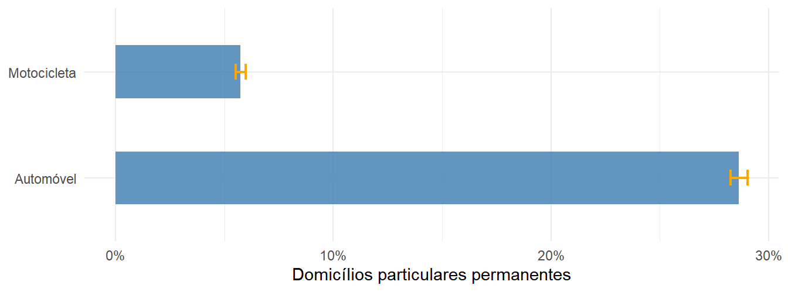
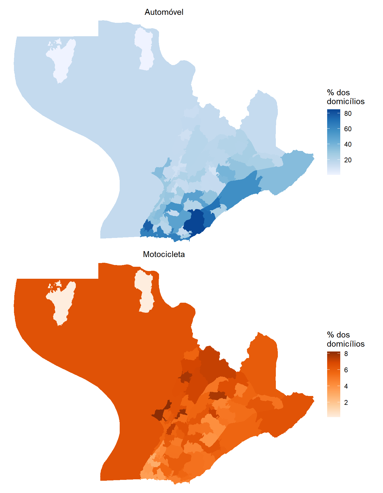
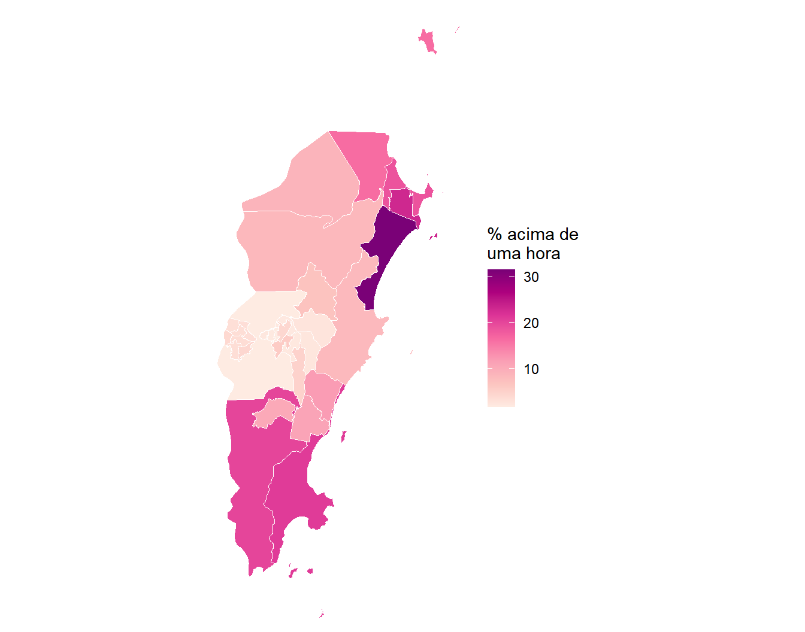
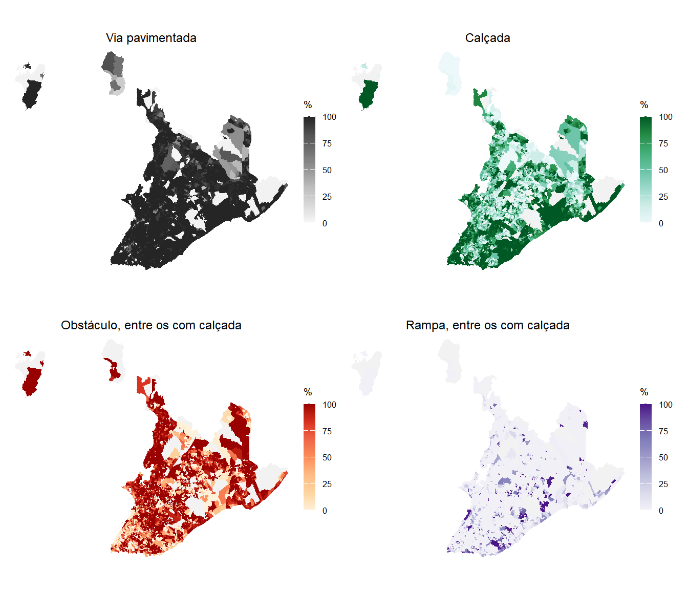
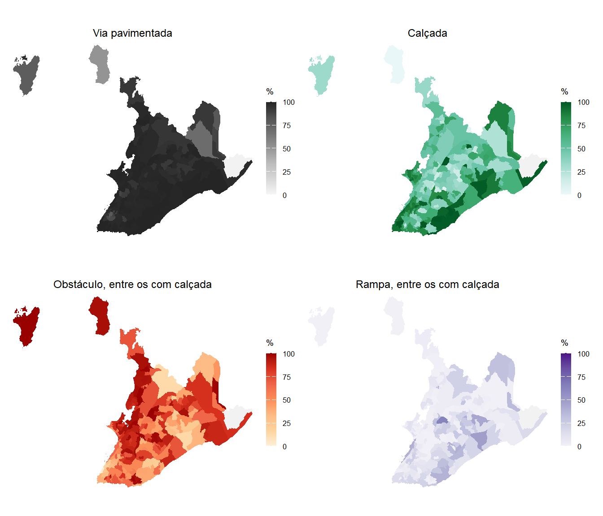

library(tidyverse)
library(censobr)
library(geobr)
library(sf)
library(srvyr)
library(patchwork)15 Mobilidade e Acessibilidade
15.1 Introdução
Deslocar-se é uma necessidade urbana cotidiana e talvez uma das mais desigualmente atendidas. Indivíduos de locais não tão distantes entre si podem enfrentar condições bem distintas a depender do seu destino e dos recursos que dispõem para tanto. Por mais que existam pesquisas de origem e destino para descrever esse fenômeno com um detalhe que nenhuma outra fonte alcança, elas geralmente são realizadas em cidades e regiões metropolitanas de maior porte e com maiores recursos. Por outro lado, o Censo cobre todo o território nacional com periodicidade regular, e por isso continua sendo a única base que permite comparar a mobilidade entre todos municípios brasileiros.
O título deste capítulo traz dois termos porque os dados do Censo podem responder a duas perguntas distintas nesse contexto. A primeira é sobre o comportamento de deslocamento, a exemplo de quanto tempo as pessoas gastam e quais recursos dispõem para chegar lá. Essa é a pergunta da mobilidade, e ela é respondida pelos microdados da amostra. A segunda é sobre a infraestrutura de transportes disponível para acessar os diferentes locais do município. Essa é a pergunta da acessibilidade, e ela é respondida pela Pesquisa Urbanística do Entorno dos Domicílios.
Esta segunda pergunta é importante, pois uma cidade proporciona melhores condições de vida a seus habitantes quando existe uma base física de qualidade para estes deslocamentos. Essa base é feita de calçada, rampas para cadeirantes, vias pavimentadas e abundância pontos de parada para o transporte coletivo. Onde essa base é deficiente, o deslocamento continua acontecendo, porque as pessoas precisam trabalhar e estudar, mas passa a ser feito com maior esforço, risco e tempo. Medir o comportamento sem medir a infraestrutura descreve o resultado e esconde a condição que o produziu.
NotaComo o termo acessibilidade é usado neste capítulo
No planejamento de transportes, acessibilidade designa a facilidade com que se alcança um destino a partir de um lugar, e é uma função, principalmente, da rede de transporte e da distribuição das atividades no território. Calculá-la nesse sentido estrito exige matrizes de tempo de viagem e a localização das oportunidades de emprego, saúde e educação, insumos que o Censo Demográfico não fornece.
Não é isso que faremos aqui. Este capítulo trata da camada física sobre a qual qualquer medida de acessibilidade se apoia, ou seja, da infraestrutura que torna o território percorrível. Quando dissermos que um setor censitário é mais acessível que outro, estaremos afirmando algo verificável nos dados, que é a maior presença de calçada, de pavimentação, de rampa e de ponto de ônibus no entorno imediato dos seus domicílios.
O termo carrega ainda um segundo sentido, o da acessibilidade universal, que trata das condições de circulação de pessoas com deficiência e mobilidade reduzida. Esse sentido também aparece nos dados, na rampa para cadeirante e no obstáculo na calçada, tratados na Seção 15.7. Os dois sentidos convergem no mesmo objeto, que é a calçada, e é por isso que ela ocupa o centro da segunda metade do capítulo.
O município escolhido para este capítulo é Salvador (BA), que possui estrutura socioespacial fortemente polarizada entre a orla atlântica e a chamada área do miolo e o Subúrbio Ferroviário. Conforme será visto, os resultados produzem contrastes internos marcantes em qualquer indicador que produziremos.
Comecemos carregando os pacotes usados ao longo do capítulo1.
15.2 O que cada edição do Censo permite investigar
Antes de qualquer cálculo, vamos explorar o que existe. Este é o capítulo do livro em que a diferença entre as edições mais restringe o que se pode fazer, e ignorá-la levaria a procurar variáveis que não existem ou a comparar quesitos que mudaram de redação. A Tabela 15.1 confronta os quesitos de deslocamento dos dois Questionários da Amostra.
| Quesito | 2010 | 2022 |
|---|---|---|
| Posse de motocicleta | V0221 |
Não investigado |
| Posse de automóvel | V0222 |
Não investigado |
| Município onde trabalha | V0660, V6604 |
Quesito 15.01 |
| Retorna do trabalho para casa | V0661, diariamente |
Quesito 15.02, três dias ou mais |
| Tempo de deslocamento | V0662, cinco faixas |
Quesito 15.03, horas e minutos |
| Modo de transporte principal | Não investigado | Quesito 15.04, 14 categorias |
| Deslocamento para estudo | Não investigado | Bloco 13 |
Três leituras importam nessa tabela. A primeira é que 2022 eliminou a posse de veículos. O bloco de bens duráveis do Questionário da Amostra ficou reduzido a dois itens, máquina de lavar roupa e acesso à internet, e automóvel e motocicleta saíram. Não haverá continuidade para esse indicador.
A segunda é que, em contrapartida, 2022 ganhou o modo de transporte, que nunca existiu em censo brasileiro anterior. Quando os microdados forem divulgados, será possível descrever a divisão modal do deslocamento casa-trabalho para qualquer município do país.
A terceira é mais sutil e mais perigosa. O quesito sobre retorno ao domicílio mudou de redação, de “retorna do trabalho para casa diariamente” em 2010 para “retorna do trabalho para casa três dias ou mais na semana” em 2022. São perguntas diferentes, e comparar as duas respostas produziria uma variação que pode trazer imprecisões importantes sobre esse aspecto.
Como os microdados de 2022 ainda não foram divulgados, todo o comportamento de deslocamento deste capítulo vem de 2010. Todavia, a infraestrutura que vem do Entorno é de 2022, e a Seção 15.7 explica por que ela não é comparada com a de 2010.
15.3 Estruturação dos microdados da amostra de 2010
Para os microdados de 2010, precisamos do código do município e da malha de áreas de ponderação dessas áreas, que servirá de base para todos os mapas da primeira metade do capítulo.
## Código IBGE do município:
salvador <- lookup_muni(name_muni = "Salvador", year = 2022)$code_muni
## Malha de áreas de ponderação de 2010, base dos mapas da primeira metade:
ap_ssa <- read_weighting_area(
code_weighting = salvador,
year = 2010,
simplified = FALSE
)
## Vetor de códigos, p/ filtrar os microdados:
ap_cods <- ap_ssa |>
pull(code_weighting)length(ap_cods)[1] 62Temos sessenta e duas áreas para um município de mais de dois milhões e meio de habitantes em 2010, o que nos dá uma resolução espacial razoável a ser explorada. Neste capítulo, utilizaremos tanto o arquivo de indivíduos quanto o de domicílio dos microdados. Isso porque a posse de veículos é característica do domicílio e o tempo de deslocamento e o local de trabalho são características da pessoa e estão no arquivo de pessoas.
Começamos pelos domicílios. Além das duas variáveis de interesse, pedimos V4001, que identifica o tipo de domicílio, por uma razão que ficará clara adiante.
## Selecionando colunas dos microdados de domicílio:
cols_dom <- c(
"V0300", # Identificador do domicílio
"V0010", # Peso amostral calibrado
"code_weighting", # Área de ponderação
"V4001", # Tipo de domicílio
"V0221", # Motocicleta para uso particular
"V0222" # Automóvel para uso particular
)
## Lendo microdados, só das áreas de ponderação de Salvador:
md_dom <- read_households(year = 2010, columns = cols_dom) |>
filter(code_weighting %in% ap_cods) |>
collect()
## Conferindo as respostas de posse de automóvel:
md_dom |>
count(V0222)# A tibble: 3 × 2
V0222 n
<chr> <int>
1 1 12295
2 2 31594
3 <NA> 613Há registros sem resposta, e antes de aplicar na.rm = TRUE convém entender de onde vêm. O cruzamento com o tipo de domicílio resolve a dúvida.
## Cruzando os ausentes com o tipo de domicílio:
md_dom |>
group_by(V4001) |>
summarize(
registros = n(),
sem_resposta = sum(is.na(V0222))
)# A tibble: 3 × 3
V4001 registros sem_resposta
<chr> <int> <int>
1 01 43889 0
2 05 160 160
3 06 453 453Todos os ausentes estão nos tipos 05 e 06, que são o domicílio particular improvisado e o domicílio coletivo. O quesito de bens duráveis só é aplicado a domicílios particulares permanentes, de código 01, e por isso os demais chegam em branco. É meramente um caso de “não se aplica”.
A conduta correta, portanto, não é descartar os ausentes com na.rm = TRUE, e sim restringir a análise ao universo em que a pergunta foi feita. As duas coisas produzem o mesmo número neste caso, mas apenas a segunda deixa o universo explícito para quem lê.
Esse recorte, porém, não é aplicado à tabela. Declaramos o desenho amostral sobre todos os domicílios lidos, na forma apresentada no Capítulo 8, e só então restringimos o universo filtrando o próprio desenho. O objeto resultante, que chamaremos de pa_dpp, mantém a estratificação e a correção de população finita originais e passa a tratar os domicílios particulares permanentes como um domínio dentro da amostra, que é o que eles de fato são. A Seção 15.6 retoma essa distinção em detalhe, quando o universo em jogo for o das pessoas que se deslocam para o trabalho.
## Total de domicílios por área de ponderação, p/ a correção de população finita:
dom_ap <- md_dom |>
group_by(code_weighting) |>
summarize(n_dom = sum(V0010))
## Levando esse total para cada registro:
md_dom <- md_dom |>
left_join(dom_ap, by = join_by(code_weighting))
## Produzindo o plano amostral para os domicílios:
pa_dom <- md_dom |>
as_survey_design(
strata = code_weighting,
weights = V0010,
fpc = n_dom
)
## Restringindo o universo aos domicílios particulares permanentes:
pa_dpp <- pa_dom |>
filter(V4001 == "01")O arquivo de pessoas segue a mesma lógica, com a diferença já discutida no Capítulo 8, que é a necessidade de declarar o domicílio como unidade de conglomeração. Pedimos as três variáveis de deslocamento que serão usadas adiante.
## Selecionando colunas dos microdados de pessoas:
cols_pes <- c(
"V0300", # Identificador do domicílio (conglomerado)
"V0010", # Peso amostral calibrado
"code_weighting", # Área de ponderação
"V0660", # Município ou país onde trabalha
"V0661", # Retorna do trabalho para casa diariamente
"V0662" # Tempo habitual de deslocamento até o trabalho
)
## Lendo microdados de pessoas:
md_pes <- read_population(year = 2010, columns = cols_pes) |>
filter(code_weighting %in% ap_cods) |>
collect()
## Total de pessoas por área de ponderação, p/ a correção de população finita:
pes_ap <- md_pes |>
group_by(code_weighting) |>
summarize(n_ind = sum(V0010))
## Levando esse total para cada registro:
md_pes <- md_pes |>
left_join(pes_ap, by = join_by(code_weighting))
## Produzindo o plano amostral para os indivíduos:
pa_pes <- md_pes |>
as_survey_design(
ids = V0300,
strata = code_weighting,
weights = V0010,
fpc = n_ind
)Com os dois desenhos amostrais declarados, podemos calcular.
15.4 Posse de automóvel e motocicleta
A posse de veículo não mede mobilidade, mas uma possibilidade, configurando, inclusive, uma medida importante de acessibilidade. Um domicílio com automóvel tem uma alternativa de deslocamento que outro que não possui, e essa diferença costuma influenciar consideravelmente todo o restante, do tempo de viagem à sensibilidade quanto à qualidade do transporte público. Comecemos pelo retrato municipal, com os intervalos de confiança que o desenho amostral exige.
Os dois veículos vêm de variáveis diferentes, e por isso cada um exige uma chamada própria a survey_mean(). Para levá-los ao mesmo gráfico, empilhamos os dois resultados com bind_rows(), acrescentando em cada um a coluna que identifica o veículo. O formato longo resultante, com uma linha por veículo, é o que o ggplot2 espera, e o resultado aparece na Figura 15.1.
## Estimando a posse dos dois veículos e empilhando os resultados:
posse_mun <- bind_rows(
pa_dpp |>
summarize(proporcao = survey_mean(V0222 == "1", vartype = "ci")) |>
mutate(veiculo = "Automóvel"),
pa_dpp |>
summarize(proporcao = survey_mean(V0221 == "1", vartype = "ci")) |>
mutate(veiculo = "Motocicleta")
)
posse_mun# A tibble: 2 × 4
proporcao proporcao_low proporcao_upp veiculo
<dbl> <dbl> <dbl> <chr>
1 0.286 0.282 0.290 Automóvel
2 0.0575 0.0552 0.0597 Motocicleta## Gráfico de barras com as barras de erro do IC 95%:
ggplot(posse_mun, aes(x = veiculo, y = proporcao,
ymin = proporcao_low, ymax = proporcao_upp)) +
geom_col(fill = "steelblue", alpha = 0.85, width = 0.5) +
geom_errorbar(width = 0.15, color = "orange", linewidth = 0.8) +
coord_flip() +
scale_y_continuous(labels = scales::label_percent(decimal.mark = ",")) +
labs(x = NULL, y = "Domicílios particulares permanentes") +
theme_minimal()
Pouco menos de três em cada dez domicílios particulares permanentes de Salvador tinham automóvel em 2010, e a motocicleta aparecia em cerca de um em cada dezoito. As barras de erro quase desaparecem sobre as colunas, e é esse o resultado esperado, uma vez que a amostra do Censo é grande e o cálculo foi feito para o município inteiro. Quando descermos à área de ponderação, com uma fração dos domicílios em cada uma, eles voltarão a ter tamanho suficiente para exigir atenção.
O interesse está na distribuição interna. Os dois mapas da Figura 15.2 trazem cada veículo em uma escala própria, porque as amplitudes são muito diferentes e uma escala comum apagaria o padrão da motocicleta.
## Sumarização dos que possuem automóvel e motocicleta:
veic_ap <- pa_dpp |>
group_by(code_weighting) |>
summarize(
automovel = survey_mean(V0222 == "1"),
motocicleta = survey_mean(V0221 == "1")
)
## Junção com a malha de áreas de ponderação:
veic_geo <- ap_ssa |>
left_join(veic_ap, by = join_by(code_weighting))
## Produzindo os gráficos:
## O tema é guardado em um objeto porque se repete em todos os mapas do capítulo
tema_mapa <- theme_minimal() +
theme(axis.text = element_blank(), axis.ticks = element_blank(),
plot.subtitle = element_text(hjust = 0.5),
panel.grid = element_blank())
mapa_auto <- ggplot(veic_geo) +
geom_sf(aes(fill = 100 * automovel), color = NA) +
scale_fill_distiller(palette = "Blues", direction = 1,
name = "% dos\ndomicílios", na.value = "gray90") +
coord_sf(expand = FALSE) +
labs(subtitle = "Automóvel") +
tema_mapa
mapa_moto <- ggplot(veic_geo) +
geom_sf(aes(fill = 100 * motocicleta), color = NA) +
scale_fill_distiller(palette = "Oranges", direction = 1,
name = "% dos\ndomicílios", na.value = "gray90") +
coord_sf(expand = FALSE) +
labs(subtitle = "Motocicleta") +
tema_mapa
mapa_auto / mapa_moto
Os dois mapas mostram uma inconveniência cartográfica que precisa ser discutida preliminarmente. Uma única área de ponderação, a de código 2927408005038, ocupa quase metade da figura e empurra o restante da cidade para o canto inferior direito. Ela tem mais de quatrocentos quilômetros quadrados porque incorpora as águas da Baía de Todos-os-Santos, que estão dentro dos limites de Salvador, e os bairros de Paripe e São Tomé, no Subúrbio Ferroviário, onde se encontra toda a sua população.
As ilhas habitadas do município não pertencem a essa área. Elas formam a área de ponderação 2927408005027, que aparece nos dois recortes claros desenhados no alto de cada mapa, reunindo Ilha de Maré, Ilha dos Frades, Ilha de Santo Antônio e Ilha de Bom Jesus dos Passos. É ela que registra a menor posse de automóvel de todo o município, e o valor não expressa somente privação de renda, porque nas ilhas de Salvador praticamente não há por onde dirigir. O mesmo problema de enquadramento reaparece com os setores censitários de 2022, e a Seção 15.7.1 mostra como resolvê-lo.
Descontada a distorção do enquadramento, o padrão do automóvel é nítido, com as proporções mais altas concentradas na ponta sul da península e ao longo da orla atlântica, e um declínio contínuo em direção ao miolo e ao norte do município, compreendendo também a região do Subúrbio Ferroviário. A motocicleta desenha um padrão aproximadamente invertido, com as maiores proporções no Subúrbio Ferroviário e algumas áreas do miolo, com as menores exatamente onde o automóvel é mais frequente. Convém não exagerar a leitura dessa inversão, porque as duas escalas são incomparáveis em magnitude, conforme o resultado abaixo deixa claro.
veic_ap |>
summarize(
auto_minimo = 100 * min(automovel),
auto_maximo = 100 * max(automovel),
moto_minimo = 100 * min(motocicleta),
moto_maximo = 100 * max(motocicleta)
)# A tibble: 1 × 4
auto_minimo auto_maximo moto_minimo moto_maximo
<dbl> <dbl> <dbl> <dbl>
1 0.487 84.8 0.178 8.23A posse de automóvel varia de menos de um por cento a quase oitenta e cinco por cento entre as áreas de ponderação de um mesmo município. É uma amplitude de mais de oitenta pontos percentuais, e ela expressa, dentro dos limites de Salvador, distâncias que costumam ser descritas comparando países. A motocicleta varia num intervalo de oito pontos, e a leitura correta é que ela funciona como alternativa de menor custo em algumas áreas, sem nunca ter alcançado a difusão que o automóvel tem na orla até 2010.
Guardadas essas proporções, resta saber para onde essas pessoas se deslocavam, e é do local de trabalho que trata a próxima seção.
15.5 Categorias de local de trabalho
A variável V0660 informa onde a pessoa ocupada exercia o trabalho principal, e ela precisa vir antes do tempo de deslocamento por uma razão prática. É ela que define quem se desloca, e portanto quem entra no denominador do indicador de tempo. A Tabela 15.2 traz a sua distribuição.
pa_pes |>
filter(!is.na(V0660)) |>
mutate(
local = factor(
V0660,
levels = c("1", "2", "3", "4", "5"),
labels = c("No próprio domicílio",
"Apenas neste município, fora do domicílio",
"Em outro município", "Em país estrangeiro",
"Em mais de um município ou país")
)
) |>
group_by(local) |>
summarize(proporcao = survey_prop(vartype = "ci")) |>
knitr::kable(
col.names = c("Local de trabalho", "Proporção",
"IC 95%, limite inferior", "IC 95%, limite superior"),
digits = 4,
format.args = list(decimal.mark = ",")
)| Local de trabalho | Proporção | IC 95%, limite inferior | IC 95%, limite superior |
|---|---|---|---|
| No próprio domicílio | 0,2357 | 0,2311 | 0,2403 |
| Apenas neste município, fora do domicílio | 0,7104 | 0,7055 | 0,7152 |
| Em outro município | 0,0481 | 0,0462 | 0,0500 |
| Em país estrangeiro | 0,0005 | 0,0003 | 0,0007 |
| Em mais de um município ou país | 0,0055 | 0,0049 | 0,0061 |
Duas informações saem daí. A primeira é que cerca de sete em cada dez pessoas ocupadas trabalhavam no próprio município e fora de casa, e que menos de cinco por cento saíam de Salvador para trabalhar. Esse número é baixo, e a razão é que Salvador é o polo da sua região metropolitana, e não uma cidade-dormitório. O movimento pendular relevante ali é o de entrada, vindo sobretudo de outros municípios vizinhos como Simões Filho e Lauro de Freitas.
Cabe aqui um alerta metodológico que vale para qualquer leitura municipal do Censo. A pesquisa descreve quem mora no município, e não quem trabalha nele. Para dimensionar quem chega de fora todos os dias seria preciso ler os microdados dos municípios de origem e usar V6604, que informa o código do município de trabalho. O capítulo não faz isso, e o leitor que precisar dessa conta deve ter em mente que o recorte de leitura muda por completo.
A segunda informação é que praticamente um quarto das pessoas ocupadas trabalhava no próprio domicílio. Esse contingente não realiza deslocamento casa-trabalho e, por construção do questionário, não responde ao quesito de tempo. Antes de calcular qualquer tempo médio, portanto, é preciso saber exatamente quem responde ao quesito:
Cruzamos, entre os que trabalham fora do domicílio, o retorno diário para casa (V0661) com o fato de a pessoa ter ou não respondido ao tempo de deslocamento (V0662). O argumento .drop = FALSE do count(), apresentado no Capítulo 9, é essencial aqui, porque sem ele as combinações que não ocorrem simplesmente não apareceriam na tabela, e são justamente elas que precisamos ver. O pivot_wider() do Capítulo 3 arruma o resultado como um quadro de dupla entrada.
md_pes |>
filter(V0660 %in% c("2", "3", "4")) |>
mutate(
retorna = factor(V0661, levels = c("1", "2"),
labels = c("Retorna diariamente", "Não retorna diariamente")),
tempo = factor(!is.na(V0662), levels = c(TRUE, FALSE),
labels = c("Respondeu V0662", "V0662 em branco"))
) |>
count(retorna, tempo, .drop = FALSE) |>
pivot_wider(names_from = tempo, values_from = n) |>
knitr::kable(
col.names = c("Retorno para casa", "Respondeu `V0662`", "`V0662` em branco"),
format.args = list(big.mark = ".", decimal.mark = ",")
)V0661) e a resposta ao tempo de deslocamento (V0662), Censo 2010.
| Retorno para casa | Respondeu V0662 |
V0662 em branco |
|---|---|---|
| Retorna diariamente | 46.905 | 0 |
| Não retorna diariamente | 0 | 2.365 |
As duas casas fora da diagonal valem exatamente zero, e é isso que o .drop = FALSE permite enxergar. Nenhum dos 46.905 registros de quem retorna diariamente deixou o tempo em branco, e nenhum dos 2.365 registros de quem não retorna respondeu ao quesito. As duas perguntas delimitam o mesmo conjunto de pessoas, o que confirma que o universo do indicador de tempo é o das pessoas que trabalham fora do domicílio e retornam para casa diariamente, exatamente como consta no título das tabelas que o IBGE publica no SIDRA para esse quesito. Quem trabalha em casa, quem trabalha em mais de um município e quem não volta todo dia ficam de fora, e a soma dos três não é desprezível em Salvador.
15.6 Tempo de deslocamento
Fixado o universo, podemos calcular a métrica mais interessante sobre mobilidade do Censo de 2010. O tempo de deslocamento é o indicador de mobilidade mais próximo da experiência cotidiana, e em 2010 ele foi coletado em cinco níveis de natureza categórica ordinal, o que impede calcular uma média ou mediana.
Como fizemos com os domicílios, declaramos o universo filtrando o próprio desenho amostral, e não a tabela de origem. Vale insistir na razão, agora que o recorte é mais delicado. O srvyr trata o subconjunto como domínio e calcula os erros-padrão levando em conta que ele é parte de uma amostra maior, preservando a estratificação, os conglomerados e a correção de população finita declarados no desenho. Um filtro aplicado antes de as_survey_design() faria o srvyr enxergar o subconjunto como se fosse a amostra inteira, produzindo erros-padrão que não correspondem ao desenho efetivamente realizado. A Tabela 15.4 traz a distribuição pelas cinco faixas.
pa_pes |>
filter(!is.na(V0662)) |>
mutate(
faixa = factor(
V0662,
levels = c("1", "2", "3", "4", "5"),
labels = c("Até 5 minutos", "De 6 minutos até meia hora",
"Mais de meia hora até uma hora",
"Mais de uma hora até duas horas",
"Mais de duas horas")
)
) |>
group_by(faixa) |>
summarize(proporcao = survey_prop(vartype = "ci")) |>
knitr::kable(
col.names = c("Tempo habitual de deslocamento", "Proporção",
"IC 95%, limite inferior", "IC 95%, limite superior"),
digits = 3,
format.args = list(decimal.mark = ",")
)| Tempo habitual de deslocamento | Proporção | IC 95%, limite inferior | IC 95%, limite superior |
|---|---|---|---|
| Até 5 minutos | 0,059 | 0,056 | 0,061 |
| De 6 minutos até meia hora | 0,335 | 0,330 | 0,340 |
| Mais de meia hora até uma hora | 0,386 | 0,381 | 0,392 |
| Mais de uma hora até duas horas | 0,195 | 0,190 | 0,199 |
| Mais de duas horas | 0,026 | 0,024 | 0,028 |
Cerca de quatro em cada dez viagens cabiam em meia hora e pouco mais de um quinto passava de uma hora. Esse último grupo é um dos que mais interessa à política pública, porque tempo de deslocamento excessivo é uma forma de privação que se acumula todos os dias e que consome horas que não voltam. Vale dimensionar o quanto essa proporção é alta. A Tabela 3422 do SIDRA traz esse mesmo quesito para todos os municípios do país em 2010 e permite situar Salvador entre as capitais. Apenas São Paulo, com 31,0%, e Rio de Janeiro, com 25,3%, registravam proporção maior. A mediana das 27 capitais era de 9,3%, com Curitiba em 10,8%, Porto Alegre em 10,1% e Goiânia em 9,3%, e mesmo capitais populosas como Fortaleza e Recife ficavam em 12,7% e 11,2%. Salvador estava, portanto, entre as três capitais em que o deslocamento casa-trabalho mais consumia tempo, o que dá a medida do que significava atravessar a cidade em hora de pico no período investigado no Censo de 2010.
Convém olhar com o mesmo cuidado para o outro extremo da tabela. As viagens de até meia hora reúnem quase quatro em cada dez pessoas, com a faixa de 6 a 30 minutos concentrando sozinha um terço do total, e seria apressado ler esse resultado como sinal de boa mobilidade. Um tempo curto de deslocamento pode significar que a pessoa mora perto de um bom emprego, mas também pode corresponder ao contrário, que o seu espaço de atividades é restrito e que ela trabalha perto de casa por não conseguir custear um deslocamento maior, seja por motorização individual, seja por transporte coletivo.
A literatura de transportes trata o tamanho do espaço de atividades como indicador de risco de exclusão social por essa razão (Schönfelder & Axhausen, 2003), e os estudos sobre exclusão social relacionada ao transporte mostram que a restrição de deslocamento estreita o leque de oportunidades de emprego, estudo e serviços ao alcance da pessoa (Lucas, 2012; Vasconcellos, 2001).
A Figura 15.3 leva o indicador ao território, somando as duas faixas superiores, compreendendo os indivíduos que se deslocam por mais de uma hora:
## Somando as duas faixas acima de uma hora, por área de ponderação:
tempo_ap <- pa_pes |>
filter(!is.na(V0662)) |>
group_by(code_weighting) |>
summarize(mais_de_uma_hora = survey_mean(V0662 %in% c("4", "5")))
## Mapa:
ap_ssa |>
left_join(tempo_ap, by = join_by(code_weighting)) |>
ggplot() +
geom_sf(aes(fill = 100 * mais_de_uma_hora), color = NA) +
scale_fill_distiller(palette = "RdPu", direction = 1,
name = "% acima de\numa hora", na.value = "gray90") +
coord_sf(expand = FALSE) +
tema_mapa
Sem surpresa, as manchas mais escuras estão nas áreas de maior vulnerabilidade socioeconômica do município, que também são as mais distantes dos centros de emprego. Elas formam um bloco contínuo no extremo nordeste da malha urbana. Antes de qualquer leitura mais fina, vale medir o tamanho da variação e confrontá-lo com a incerteza das estimativas.
tempo_ap |>
summarize(
minimo = 100 * min(mais_de_uma_hora),
maximo = 100 * max(mais_de_uma_hora),
largura_media_do_ic = 100 * mean(2 * 1.96 * mais_de_uma_hora_se)
) # A tibble: 1 × 3
minimo maximo largura_media_do_ic
<dbl> <dbl> <dbl>
1 7.79 50.7 7.34A amplitude é grande, com áreas em que menos de um em cada doze trabalhadores gasta mais de uma hora e áreas em que a proporção passa de metade. A largura média do intervalo de confiança fica bem abaixo dessa diferença, o que significa que o contraste entre os extremos é real, e não ruído amostral. Diferenças pequenas entre áreas vizinhas, porém, continuam exigindo cautela, porque duas áreas separadas por sete pontos percentuais podem ter intervalos que se sobrepõem.
Vale, por fim, confrontar a Figura 15.2 com a Figura 15.3, já que ambas usam a mesma amostra, o mesmo ano e o mesmo recorte espacial. As áreas de maior posse de automóvel são, em geral, as de menor tempo de deslocamento, e nesse ponto os dois mapas se espelham.
Descrito o comportamento, passamos à infraestrutura que o sustenta.
15.7 A infraestrutura para a acessibilidade
Agora mudamos a fonte, o ano e a unidade espacial. A Pesquisa Urbanística do Entorno dos Domicílios, apresentada no Capítulo 11, descreve por observação direta as características urbanísticas do trecho de rua em frente a cada domicílio, e é divulgada por setor censitário. Ela não pergunta nada ao morador, o que a torna independente de declaração e a coloca em outro registro de evidência.
Convém ter em mente, desde já, que o local observada não é a mesma em todos os itens, conforme a Tabela 11.2 do Capítulo 11 detalha. Os itens ligados à via, entre eles a pavimentação, o ponto de ônibus e a sinalização para bicicleta, são observados na face percorrida, na face confrontante e no canteiro central. Já os itens ligados à calçada, que são a existência, o obstáculo e a rampa, são observados somente na face percorrida. Percentuais desses dois grupos apresentados lado a lado não descrevem a mesma extensão de espaço público.
Dos dez itens investigados em 2022, seis dizem respeito direto à acessibilidade física no sentido definido na introdução. Dois deles descrevem a via, que são a pavimentação e a sinalização para bicicleta. Três descrevem a calçada, que são a existência, a presença de obstáculo e a rampa para cadeirante. E um descreve um componente da oferta de transporte coletivo, que é o ponto de ônibus ou van.
Além disso, é importante frisar que estes itens registram somente a presença ou a ausência de cada elemento, e nada informam sobre largura, estado de conservação, continuidade ao longo do percurso, declividade ou frequência do serviço, todos determinantes da experiência de quem caminha ou espera o ônibus. Não sustentam, portanto, um diagnóstico completo da infraestrutura física, nem uma avaliação rigorosa de macroacessibilidade, que trata do alcance da rede de transporte na escala da cidade, nem de microacessibilidade, que trata das condições de circulação no percurso imediato. O que eles oferecem são bons primeiros indícios, disponíveis para todos os setores censitários do país e comparáveis entre si, e é assim que devem ser lidos ao longo do capítulo.
Usaremos apenas os dados de 2022 por uma razão metodológica. Conforme vimos na Tabela 11.5 do Capítulo 11, somente iluminação pública e bueiro ou boca de lobo mantiveram o mesmo conceito e critério entre os dois censos. Calçada e pavimentação mudaram de definição, a rampa passou a ser investigada apenas nas faces que têm calçada, e nenhum dos itens que interessam a este capítulo admite comparação direta com 2010. Uma série histórica montada com esses números mediria a mudança do questionário, e não a da cidade.
O bloco a ser utilizado é o de domicílios do arquivo, e não o de faces de quadra. Essa escolha importa porque contar faces mede extensão de via, enquanto contar domicílios mede quantas moradias estão diante de cada situação, que é o que interessa quando a pergunta é sobre pessoas.
## Lendo o arquivo de Entorno, no bloco de domicílios:
ent_ssa <- read_tracts(dataset = "Entorno", year = 2022) |>
filter(code_muni == salvador) |>
select(code_tract,
domicilios_V05000,
num_range("domicilios_V050", 6:8, width = 2),
num_range("domicilios_V050", 15:29, width = 2)) |>
collect()
nrow(ent_ssa)[1] 4531O denominador de todos os indicadores é domicilios_V05000, o total de domicílios particulares permanentes com entorno pesquisado. Não é o total de domicílios do setor, pela razão discutida na Seção 11.4. Vale medir o quanto o entorno cobre do município antes de calcular qualquer percentual, e para isso precisamos do arquivo Básico, que traz o total de domicílios ocupados e a identificação geográfica de cada setor.
## Lendo o arquivo Básico, p/ o total de domicílios ocupados e os bairros:
basico_2022 <- read_tracts(dataset = "Basico", year = 2022) |>
filter(code_muni == salvador) |>
select(code_tract, name_neighborhood, situacao, V0007) |>
collect()
nrow(basico_2022)[1] 4542tibble(
setores_no_basico = nrow(basico_2022),
setores_com_entorno = nrow(ent_ssa),
dom_ocupados = sum(basico_2022$V0007, na.rm = TRUE),
dom_investigados = sum(ent_ssa$domicilios_V05000, na.rm = TRUE)
) |>
mutate(cobertura = 100 * dom_investigados / dom_ocupados)# A tibble: 1 × 5
setores_no_basico setores_com_entorno dom_ocupados dom_investigados cobertura
<int> <int> <dbl> <dbl> <dbl>
1 4542 4531 959423 956277 99.7Praticamente todos os domicílios ocupados do município têm entorno pesquisado, o que dá segurança à leitura. Municípios com forte presença rural apresentam cobertura bem menor, conforme vimos no Capítulo 11, e a verificação deve ser refeita a cada caso.
Calculamos agora os indicadores municipais, e eles não cabem todos em uma tabela só. Quatro dos seis itens são perguntados em toda face pesquisada, e o denominador deles é o total de domicílios com entorno pesquisado. Os outros dois, obstáculo e rampa, só são investigados onde existe calçada, e por isso pedem denominador próprio. Começamos pelos quatro primeiros.
## Somando todas as colunas do Entorno de uma vez, p/ o município inteiro:
totais <- ent_ssa |>
summarize(across(starts_with("domicilios_"), \(x) sum(x, na.rm = TRUE)))
## Montando a tabela dos quatro itens investigados em toda face:
tibble(
Item = c("Via pavimentada", "Ponto de ônibus ou van",
"Via sinalizada para bicicleta", "Calçada"),
Sim = c(totais$domicilios_V05006, totais$domicilios_V05015,
totais$domicilios_V05018, totais$domicilios_V05021),
Nao = c(totais$domicilios_V05007, totais$domicilios_V05016,
totais$domicilios_V05019, totais$domicilios_V05022),
`Não declarado` = c(totais$domicilios_V05008, totais$domicilios_V05017,
totais$domicilios_V05020, totais$domicilios_V05023)
) |>
mutate(`% com o item` = 100 * Sim / totais$domicilios_V05000) |>
knitr::kable(digits = 1, format.args = list(big.mark = ".", decimal.mark = ","))| Item | Sim | Nao | Não declarado | % com o item |
|---|---|---|---|---|
| Via pavimentada | 935.870 | 17.479 | 2.928 | 97,9 |
| Ponto de ônibus ou van | 79.753 | 873.596 | 2.928 | 8,3 |
| Via sinalizada para bicicleta | 30.572 | 922.777 | 2.928 | 3,2 |
| Calçada | 543.881 | 409.468 | 2.928 | 56,9 |
A tabela desenha cenários bastante distintos para a mobilidade motorizada e a ativa (caminhada e bicicleta). A pavimentação está praticamente universalizada, com quase noventa e oito por cento dos domicílios em face de via pavimentada. A calçada cai para pouco mais da metade, o que significa que perto de quatrocentos mil domicílios de Salvador não têm calçada em frente. Como pouco mais de vinte mil domicílios do município estão em face de via sem pavimentação ou sem declaração, a imensa maioria desses quatrocentos mil está diante de uma via pavimentada e sem qualquer separação entre quem anda e quem dirige. E os itens que servem a quem não usa automóvel, como o ponto de ônibus e a via sinalizada para bicicleta, ficam abaixo de dez por cento. Repare ainda que a coluna de não declarados é um resíduo pequeno, de menos de três mil domicílios, o mesmo nos quatro itens.
AvisoPonto de ônibus na face não é o mesmo que acesso ao transporte
Os oito por cento de ponto de ônibus não medem de forma inequívoca a cobertura do transporte coletivo em Salvador. O objetivo declarado na definição do quesito é “identificar pontos com sinalização visível de parada de transporte público do tipo ônibus/van para embarque e desembarque de passageiros”, com critério Mínimo e local de investigação na face percorrida, na face confrontante e no canteiro central, quando houver (IBGE, 2025). Basta, portanto, uma sinalização em qualquer dos dois lados da rua, e o outro lado conta tanto quanto o da porta de casa. Por outro lado, nada é observado fora desse trecho, de modo que um ponto situado na esquina seguinte, a poucos minutos de caminhada, não entra na conta daquela face. Todavia, para uma análise mais ampla da acessibilidade proporcionada pelo transporte público, é necessário entender outros aspectos, a exemplo de quais linhas passam por esses pontos e com que frequência os ônibus passam por eles.
Passemos aos dois itens restantes. Como o questionário só pergunta por obstáculo e por rampa nas faces em que existe calçada, conforme o fluxo apresentado na Seção 11.2.3.2, os domicílios sem calçada não recebem “não” nesses quesitos, e sim “não declarado”. Dividi-los pelo total de domicílios investigados jogaria no denominador quem nunca teve chance de aparecer no numerador, e o percentual resultante misturaria duas carências distintas, a de não ter calçada e a de ter uma calçada sem rampa. O denominador correto é o total de domicílios com calçada, e a própria tabela mostra que ele fecha, porque as colunas de “sim” e “não” somam exatamente esse total em ambos os itens.
tibble(
Item = c("Obstáculo na calçada", "Rampa para cadeirante"),
Sim = c(totais$domicilios_V05024, totais$domicilios_V05027),
Nao = c(totais$domicilios_V05025, totais$domicilios_V05028),
`Domicílios com calçada` = totais$domicilios_V05021
) |>
mutate(`% com o item` = 100 * Sim / `Domicílios com calçada`) |>
knitr::kable(digits = 1, format.args = list(big.mark = ".", decimal.mark = ","))| Item | Sim | Nao | Domicílios com calçada | % com o item |
|---|---|---|---|---|
| Obstáculo na calçada | 366.700 | 177.181 | 543.881 | 67,4 |
| Rampa para cadeirante | 68.338 | 475.543 | 543.881 | 12,6 |
Dois terços das calçadas de Salvador têm alguma obstrução, seja poste, seja degrau, seja mercadoria exposta. A rampa para cadeirante, por sua vez, aparece em pouco mais de um em cada oito domicílios que têm calçada em frente. Como esse subconjunto já é apenas pouco mais da metade dos domicílios investigados, o caminho acessível de ponta a ponta, com calçada e com rampa, é bem mais raro do que qualquer um dos dois indicadores isolados sugere.
Essa é a forma de contar que adotaremos em todo o restante do capítulo sempre que o assunto for a qualidade da calçada.
15.7.1 Onde está a infraestrutura
Levemos os indicadores ao mapa. A leitura das geometrias exige dois cuidados, ambos resolvidos no mesmo bloco de código. O primeiro é descartar o setor 292740805100008, que tem 386 km², nenhum morador e nenhuma classificação de situação, porque corresponde à porção da Baía de Todos-os-Santos que está dentro dos limites municipais. É importante frisar que, neste caso, ele só se encontra sobre as águas da baía e não compreende nenhuma porção terrestre habitada2. Mantê-lo comprimiria a cidade em um canto da figura, como aconteceu com a área de ponderação da Figura 15.2. O filtro !is.na(situacao) dá conta dele, e as ilhas habitadas permanecem no mapa. O segundo é que a malha de setores censitários do geobr para Salvador traz três setores repartidos em mais de uma linha. Por terem partes desconexas, e é preciso dissolvê-los pelo código com group_by() e summarize(), na forma apresentada no Capítulo 5, para que nenhum setor entre duas vezes nas somas por bairro.
## Lendo a malha de setores de 2022:
setores_2022 <- read_census_tract(
code_tract = salvador,
year = 2022,
simplified = FALSE
) |>
select(code_tract)
## Dissolvendo os setores repartidos, descartando o setor da baía e
## criando os quatro indicadores:
ent_geo <- setores_2022 |>
group_by(code_tract) |>
summarize(.groups = "drop") |>
left_join(basico_2022, by = "code_tract") |>
filter(!is.na(situacao)) |>
left_join(ent_ssa, by = "code_tract") |>
mutate(
p_pavimentada = 100 * domicilios_V05006 / domicilios_V05000,
p_calcada = 100 * domicilios_V05021 / domicilios_V05000,
p_obstaculo = 100 * domicilios_V05024 / domicilios_V05021,
p_rampa = 100 * domicilios_V05027 / domicilios_V05021
)
nrow(ent_geo)[1] 4541Restam 4.541 setores, que são os 4.542 do arquivo Básico menos o setor da baía. A Figura 15.4 traz quatro indicadores nessa malha. Os dois de cima descrevem o que existe na via e na testada do lote, sobre o total de domicílios investigados. Os dois de baixo descrevem a qualidade da calçada e, por isso, usam como denominador apenas os domicílios que têm calçada, na forma discutida na seção anterior. Faremos a leitura depois de ver a mesma figura em um segundo recorte espacial.
## Legenda compacta, para sobrar espaço aos mapas nos quatro painéis:
tema_legenda <- theme(
legend.key.width = unit(0.30, "cm"),
legend.key.height = unit(0.55, "cm"),
legend.title = element_text(size = 7),
legend.text = element_text(size = 6),
legend.margin = margin(l = 0, r = 0),
plot.subtitle = element_text(size = 9, hjust = 0.5)
)
## Um mapa por indicador:
e1 <- ggplot(ent_geo) +
geom_sf(aes(fill = p_pavimentada), color = NA) +
scale_fill_distiller(palette = "Greys", direction = 1, name = "%",
na.value = "gray95", limits = c(0, 100)) +
coord_sf(expand = FALSE) + labs(subtitle = "Via pavimentada") +
tema_mapa + tema_legenda
e2 <- ggplot(ent_geo) +
geom_sf(aes(fill = p_calcada), color = NA) +
scale_fill_distiller(palette = "BuGn", direction = 1, name = "%",
na.value = "gray95", limits = c(0, 100)) +
coord_sf(expand = FALSE) + labs(subtitle = "Calçada") +
tema_mapa + tema_legenda
e3 <- ggplot(ent_geo) +
geom_sf(aes(fill = p_obstaculo), color = NA) +
scale_fill_distiller(palette = "OrRd", direction = 1, name = "%",
na.value = "gray95", limits = c(0, 100)) +
coord_sf(expand = FALSE) + labs(subtitle = "Obstáculo, entre os com calçada") +
tema_mapa + tema_legenda
e4 <- ggplot(ent_geo) +
geom_sf(aes(fill = p_rampa), color = NA) +
scale_fill_distiller(palette = "Purples", direction = 1, name = "%",
na.value = "gray95") +
coord_sf(expand = FALSE) + labs(subtitle = "Rampa, entre os com calçada") +
tema_mapa + tema_legenda
## Composição em dois por dois:
(e1 + e2) / (e3 + e4)
O setor censitário é a maior resolução disponível e, com 4.541 unidades, produz uma figura granulada em que a leitura de conjunto compete com o detalhe. Vale, por isso, refazer a mesma figura por bairro. Salvador tem os bairros preenchidos nos agregados, ao contrário do que vimos em Goiânia no Capítulo 12, e são 170 no total. Agregamos os indicadores somando numeradores e denominadores antes de dividir, conforme sempre fizemos.
## Somando numeradores e denominadores por bairro antes de dividir:
bairros_ent <- ent_geo |>
st_drop_geometry() |>
filter(!is.na(name_neighborhood)) |>
group_by(name_neighborhood) |>
summarize(
investigados = sum(domicilios_V05000, na.rm = TRUE),
pavimentada = sum(domicilios_V05006, na.rm = TRUE),
calcada = sum(domicilios_V05021, na.rm = TRUE),
obstaculo = sum(domicilios_V05024, na.rm = TRUE),
rampa = sum(domicilios_V05027, na.rm = TRUE)
) |>
mutate(
p_pavimentada = 100 * pavimentada / investigados,
p_calcada = 100 * calcada / investigados,
p_obstaculo = 100 * obstaculo / calcada,
p_rampa = 100 * rampa / calcada
)A geometria dos bairros sai da própria malha de setores, dissolvida pelo nome do bairro com group_by() e summarize(), na forma usada no Capítulo 14, com a st_make_valid() antes para corrigir geometrias inválidas.
## Dissolvendo os setores por bairro e juntando os indicadores:
bairros_geo <- ent_geo |>
filter(!is.na(name_neighborhood)) |>
st_make_valid() |>
group_by(name_neighborhood) |>
summarize(.groups = "drop") |>
left_join(bairros_ent, by = "name_neighborhood")Os quatro painéis da Figura 15.5 são os mesmos da Figura 15.4, com as mesmas paletas e as mesmas escalas, de modo que a comparação entre as duas figuras é direta.
## Os mesmos quatro mapas, agora por bairro:
b1 <- ggplot(bairros_geo) +
geom_sf(aes(fill = p_pavimentada), color = NA) +
scale_fill_distiller(palette = "Greys", direction = 1, name = "%",
na.value = "gray95", limits = c(0, 100)) +
coord_sf(expand = FALSE) + labs(subtitle = "Via pavimentada") +
tema_mapa + tema_legenda
b2 <- ggplot(bairros_geo) +
geom_sf(aes(fill = p_calcada), color = NA) +
scale_fill_distiller(palette = "BuGn", direction = 1, name = "%",
na.value = "gray95", limits = c(0, 100)) +
coord_sf(expand = FALSE) + labs(subtitle = "Calçada") +
tema_mapa + tema_legenda
b3 <- ggplot(bairros_geo) +
geom_sf(aes(fill = p_obstaculo), color = NA) +
scale_fill_distiller(palette = "OrRd", direction = 1, name = "%",
na.value = "gray95", limits = c(0, 100)) +
coord_sf(expand = FALSE) + labs(subtitle = "Obstáculo, entre os com calçada") +
tema_mapa + tema_legenda
b4 <- ggplot(bairros_geo) +
geom_sf(aes(fill = p_rampa), color = NA) +
scale_fill_distiller(palette = "Purples", direction = 1, name = "%",
na.value = "gray95", limits = c(0, 100)) +
coord_sf(expand = FALSE) + labs(subtitle = "Rampa, entre os com calçada") +
tema_mapa + tema_legenda
## Composição em dois por dois:
(b1 + b2) / (b3 + b4)
Com as duas figuras à vista, podemos ler os quatro indicadores de uma vez. A pavimentação confirma no território o que a tabela municipal já indicava, com quase toda a mancha urbana no tom mais escuro da escala. As exceções são poucas e localizadas, e a agregação por bairro as isola bem, com destaque para a mancha da porção norte da cidade, sobretudo nos bairros Cassange, Areia Branca e Itinga. Cassange é o caso mais pronunciado entre os bairros de terra firme. Com ocupação mais recente, evidenciada no aumento expressivo da população entre os dois últimos censos, tem pouco mais de setenta por cento dos domicílios em face de via pavimentada, contra os 97,9% do município. A Ilha de Maré, com metade dos domicílios, é exceção de outra natureza, já que a questão ali não é a data da ocupação.
A calçada muda completamente a figura, e nela reaparece a dicotomia socioespacial anunciada na introdução. Uma faixa quase contínua de tom escuro acompanha a orla atlântica e a ponta sul da península, com valores próximos de cem por cento, enquanto o miolo e boa parte do Subúrbio Ferroviário aparecem nos tons mais claros. É no mapa por bairro que essa faixa se fecha e vira um bloco reconhecível. A separação entre quem anda e quem dirige, portanto, existe sobretudo onde moram os grupos de maior renda, e falta justamente onde a dependência do deslocamento a pé é maior.
Os dois painéis inferiores repetem parcialmente esse desenho. O obstáculo é escuro em quase toda a cidade, com setores inteiros em que todas as calçadas pesquisadas têm alguma obstrução, mas com maior predominância no miolo e no Subúrbio Ferroviário. A leitura que ele autoriza também carrega a desigualdade territorial, mas também revela um padrão construtivo generalizado, já que onde a calçada existe ela costuma estar obstruída, em maior ou menor grau ao longo de toda a cidade. A rampa é o item mais escasso do conjunto, e os dois painéis ficam quase todos no tom mais claro da escala. Onde ela é mais frequente, tende a ser no eixo que vai dos bairros da Pituba ao Imbuí e em outros bairros da orla atlântica, exatamente onde a cobertura de calçada é maior, de modo que a desigualdade da calçada se reproduz e se agrava na sua acessibilidade.
Passemos aos extremos. Na Tabela 15.7, mantemos apenas os bairros com ao menos quinhentos domicílios investigados, para que percentuais calculados sobre denominadores muito pequenos não dominem as pontas.
## Mantendo só os bairros com ao menos 500 domicílios investigados:
bairros_500 <- bairros_ent |>
filter(investigados >= 500)
## Juntando os 4 maiores com os 6 menores em % com calçada:
bind_rows(
bairros_500 |> slice_max(p_calcada, n = 4),
bairros_500 |> slice_min(p_calcada, n = 6)
) |>
select(name_neighborhood, investigados, p_pavimentada, p_calcada, p_rampa) |>
knitr::kable(
col.names = c("Bairro", "Domicílios investigados", "% com via pavimentada",
"% com calçada", "% com rampa, entre os com calçada"),
digits = 1,
format.args = list(big.mark = ".", decimal.mark = ",")
)| Bairro | Domicílios investigados | % com via pavimentada | % com calçada | % com rampa, entre os com calçada |
|---|---|---|---|---|
| Chame-Chame | 968 | 100,0 | 100,0 | 0,0 |
| Amaralina | 1.635 | 100,0 | 99,9 | 26,3 |
| Itaigara | 3.495 | 100,0 | 99,9 | 27,0 |
| Horto Florestal | 2.823 | 100,0 | 99,9 | 18,1 |
| Ilha de Maré | 1.444 | 50,8 | 1,7 | 0,0 |
| Engomadeira | 3.446 | 98,2 | 5,1 | 0,0 |
| Palestina | 1.942 | 97,7 | 5,4 | 0,0 |
| São Gonçalo | 5.789 | 99,7 | 14,9 | 0,0 |
| Calabetão | 2.780 | 97,9 | 15,4 | 14,1 |
| São Marcos | 9.159 | 97,1 | 16,0 | 0,9 |
O contraste entre as duas pontas é o de uma cidade inteira contra outra. Nos bairros do topo, a calçada é praticamente universal. Nos da base, ela existe no entorno de menos de um sexto dos domicílios, e em um deles quase não existe.
Esse caso extremo é a Ilha de Maré, e ele merece leitura própria porque combina duas carências de naturezas distintas. A coluna de pavimentação mostra que metade dos domicílios da ilha está em face de via pavimentada, contra praticamente cem por cento nos demais bairros da tabela. Nos outros bairros da base, a via foi asfaltada e a calçada não veio junto. Na Ilha de Maré, boa parte da via sequer foi pavimentada. São dois estágios diferentes de provisão de infraestrutura, e o indicador de calçada isolado os confundiria.
15.8 Síntese
O capítulo percorreu as duas perguntas anunciadas no título, cada uma com o produto do Censo que a responde. Do lado do comportamento, os microdados da amostra de 2010 mostraram uma Salvador em que menos de três em cada dez domicílios tinham automóvel, com variação de menos de um por cento a quase oitenta e cinco por cento entre áreas de ponderação, e em que pouco mais de um quinto de quem se desloca gastava mais de uma hora para chegar ao trabalho. Esse indicador também é desigual no território, indo de menos de oito por cento a mais de metade dos trabalhadores conforme a área, com os piores tempos nas porções mais distantes dos centros de emprego. Menos de cinco por cento dos ocupados saíam do município para trabalhar, o que é próprio de um polo metropolitano e não de uma cidade-dormitório.
Do lado da acessibilidade, o Entorno de 2022 descreveu uma cidade quase inteiramente pavimentada, com 97,9% dos domicílios em face de via pavimentada, e ao mesmo tempo com calçada em apenas 56,9% deles. Entre os que têm calçada, dois terços convivem com algum obstáculo e apenas 12,6% contam com rampa para cadeirante. Os mapas por setor e por bairro mostraram que a pavimentação é praticamente uniforme, com carência concentrada na porção norte de ocupação mais recente, enquanto a calçada reproduz a divisão socioespacial entre a orla atlântica e a ponta sul, de um lado, e o miolo e o Subúrbio Ferroviário, de outro. A distância entre as duas pontas é grande, indo de praticamente nenhuma calçada na Ilha de Maré à cobertura integral em bairros da orla.
Quatro cuidados de método atravessam esses resultados. O primeiro é o do universo, porque o tempo de deslocamento só se aplica a quem trabalha fora de casa e retorna diariamente para ela, e calcular a média sobre todos os ocupados produziria um número que não descreve ninguém. O segundo é o do denominador, porque obstáculo e rampa só são investigados onde existe calçada, e contá-los sobre o total de domicílios pesquisados jogaria no denominador quem nunca teve chance de aparecer no numerador. O terceiro é o da comparabilidade, porque montar uma série histórica de calçada entre 2010 e 2022 mediria a mudança do conceito, e não a da cidade. O quarto é o da unidade espacial, já que a mesma figura desenhada por setor e por bairro deixa claro que agregar reduz o ruído e ajuda a nomear os lugares, sem criar padrão onde não havia.
Fica, por fim, o limite do que o Censo alcança. Os seis itens do Entorno registram presença e ausência, e nada dizem sobre largura, conservação, continuidade ou frequência do serviço. Eles descrevem a camada física sobre a qual a acessibilidade se apoia, e não a acessibilidade no sentido estrito, que depende da rede de transporte e da localização das oportunidades. Quando os microdados de 2022 forem divulgados, o quesito de modo de transporte permitirá acrescentar a essa camada física a divisão modal de quem a percorre.
O capítulo seguinte trata da renda e do trabalho, que são, ao mesmo tempo, o destino da maior parte desses deslocamentos e o recurso que determina quais deles são possíveis.
15.9 Exercícios
Reproduza o indicador de deslocamento acima de uma hora para um município que seja periferia de região metropolitana, e não polo, e compare a distribuição das cinco faixas de
V0662com a de Salvador. Relacione a diferença encontrada com o que a variávelV0660informa sobre o local de trabalho em cada um dos dois municípios.A Tabela 15.3 mostrou que o quesito de tempo só é respondido por quem trabalha fora do domicílio e retorna diariamente. Calcule, para Salvador, que proporção do total de pessoas ocupadas fica fora desse universo e decomponha esse total entre os três motivos de exclusão. Discuta o efeito que teria sobre o indicador tratar os excluídos como se tivessem tempo de deslocamento igual a zero.
A Tabela 15.6 calculou a rampa sobre os domicílios com calçada. Calcule também, por bairro, a versão que usa como denominador o total de domicílios investigados, identifique os bairros em que a diferença entre as duas versões é maior e explique o que caracteriza esses bairros.
Leia do arquivo Pessoas dos agregados de 2022 as variáveis
demografia_V01040edemografia_V01041, que trazem a população de 60 a 69 anos e a de 70 anos ou mais, e calcule a proporção de pessoas nessa faixa em cada setor censitário de Salvador. Selecione então os setores que estão, ao mesmo tempo, entre os vinte e cinco por cento mais envelhecidos e entre os vinte e cinco por cento de menor cobertura de calçada. Mapeie-os, identifique a que bairros pertencem e discuta por que esse recorte é mais útil para orientar uma intervenção de acessibilidade universal do que a média municipal.O bloco de faces de quadra do arquivo de Entorno traz os mesmos seis itens usados neste capítulo, com denominador em faces em vez de domicílios. Recalcule os indicadores municipais pelas faces e compare com os da Tabela 15.5. Explique por que os dois conjuntos de percentuais diferem e em que situação cada um é o mais adequado.
Usando a Tabela 15.1, escreva duas listas. Na primeira, as perguntas de mobilidade que só poderão ser respondidas depois da divulgação dos microdados de 2022. Na segunda, as que deixaram de ser respondíveis para sempre. Para cada item da segunda lista, indique que outra fonte de dados poderia substituir o Censo.